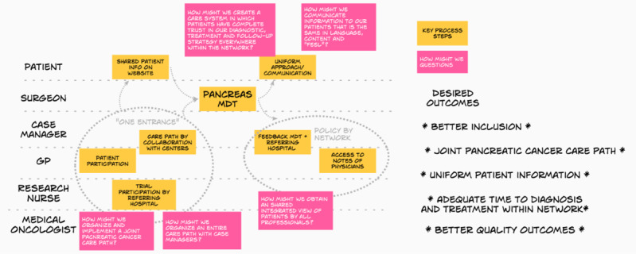
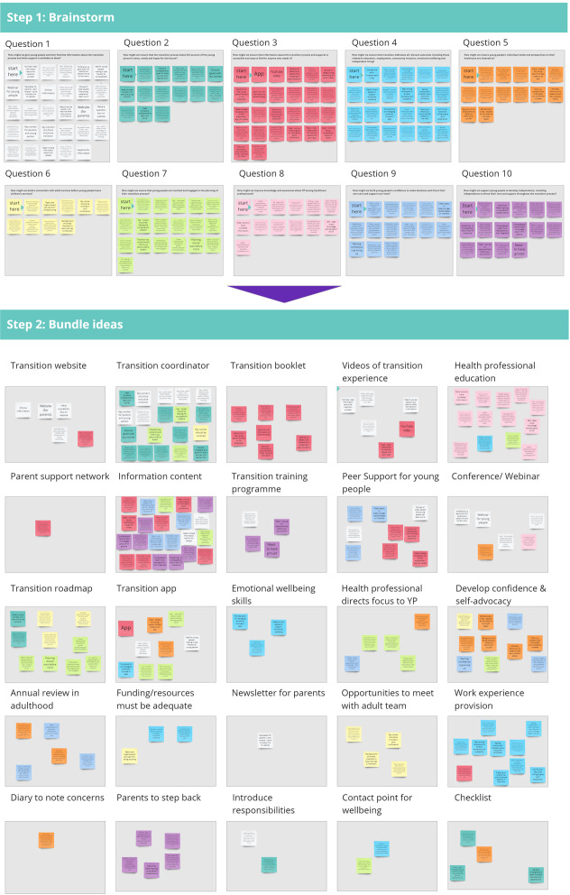
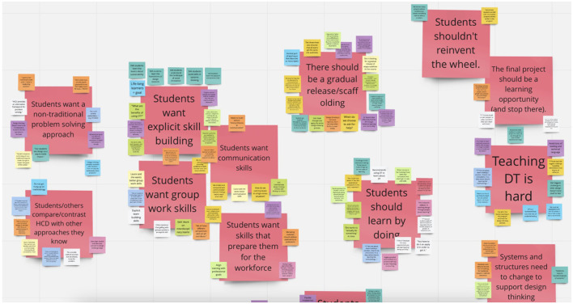
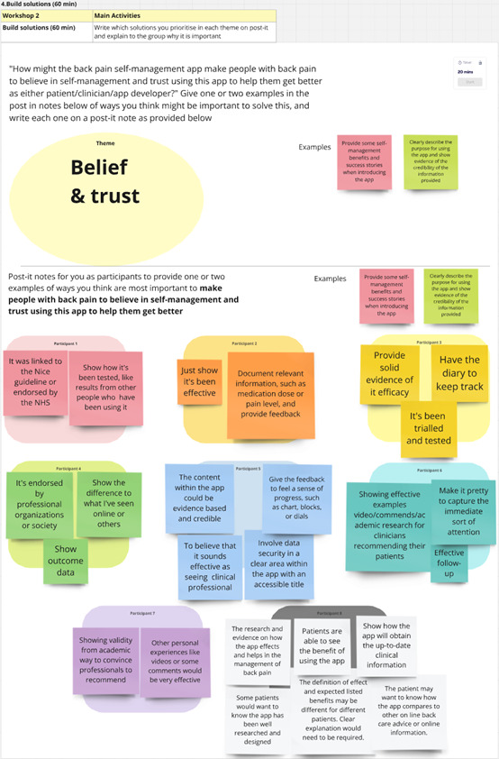

HMW insight board
About
An HMW insight board clusters research insights and reframes each as a "How might we…" question — the bridge that carries a team from understanding into ideation. Each grounded insight becomes an opportunity expressed as an optimistic, open, and appropriately scoped question that invites a range of solutions without smuggling one in. Get the scope right and an HMW opens a productive design space; too broad and it overwhelms, too narrow and it merely restates a predetermined answer. The board collects these questions so the team can choose which opportunities to pursue.
When to use
Use an HMW insight board at the transition from synthesis to ideation, to turn findings into framed design challenges, and as a workshop device that gives a group a shared, generative starting point for brainstorming.
When not to use
Do not write HMW questions before you have grounded insights to base them on, and watch the scope — an HMW that is too broad ("how might we redesign everything") or that hides a single solution inside the question defeats the purpose.
References
Examples
Click any example to view full size and visit the original source.



